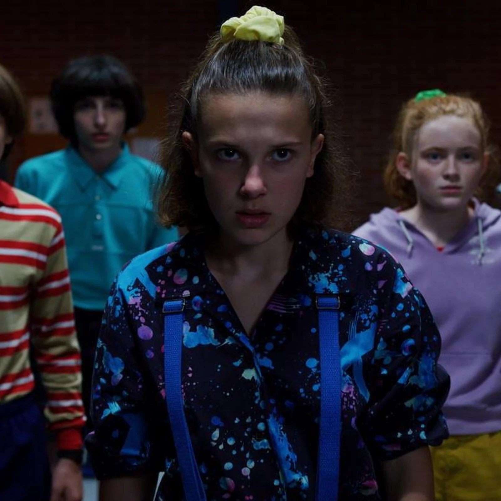

A terceira temporada de Stranger Things se passa no verão de 1985, quando Eleven e seus amigos estão aproveitando as férias, os namoros e o novo shopping de Hawkins. Mas a diversão acaba quando coisas estranhas começam a acontecer na cidade e o Devorador de Mentes volta ainda mais perigoso. Enquanto os amigos tentam descobrir o que está acontecendo, eles acabam enfrentando novos monstros, descobrindo segredos e vivendo aventuras cheias de ação e suspense. A terceira temporada é uma das mais emocionantes da série, misturando momentos engraçados, amizades, romances e cenas de tirar o fôlego. Com muitas surpresas e um final marcante, ela mostra que a amizade e a união são essenciais para enfrentar até os maiores perigos.
